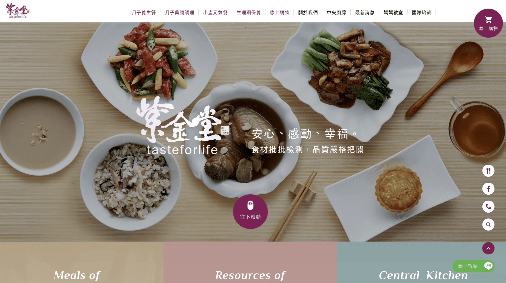
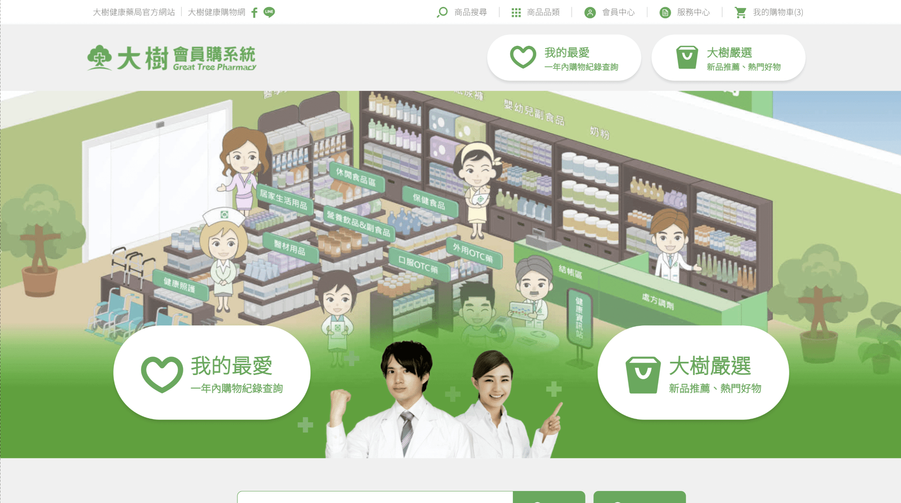
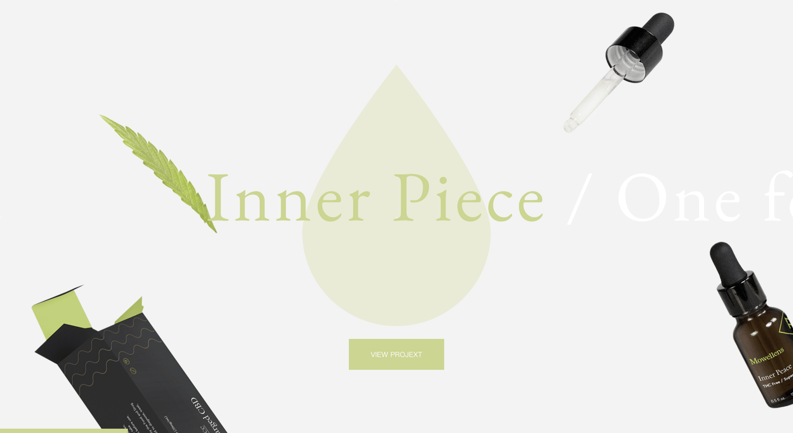
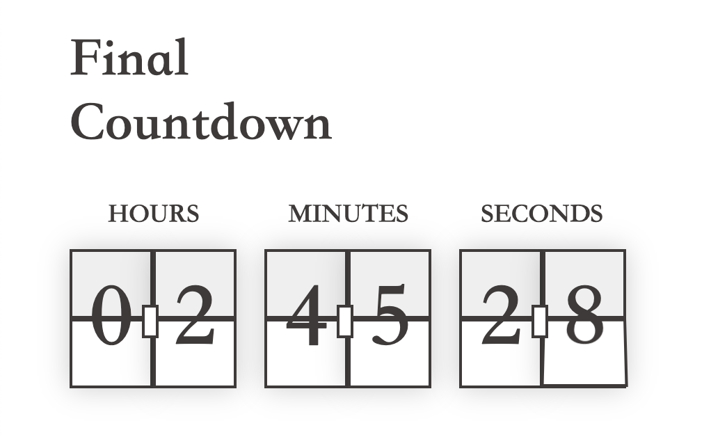
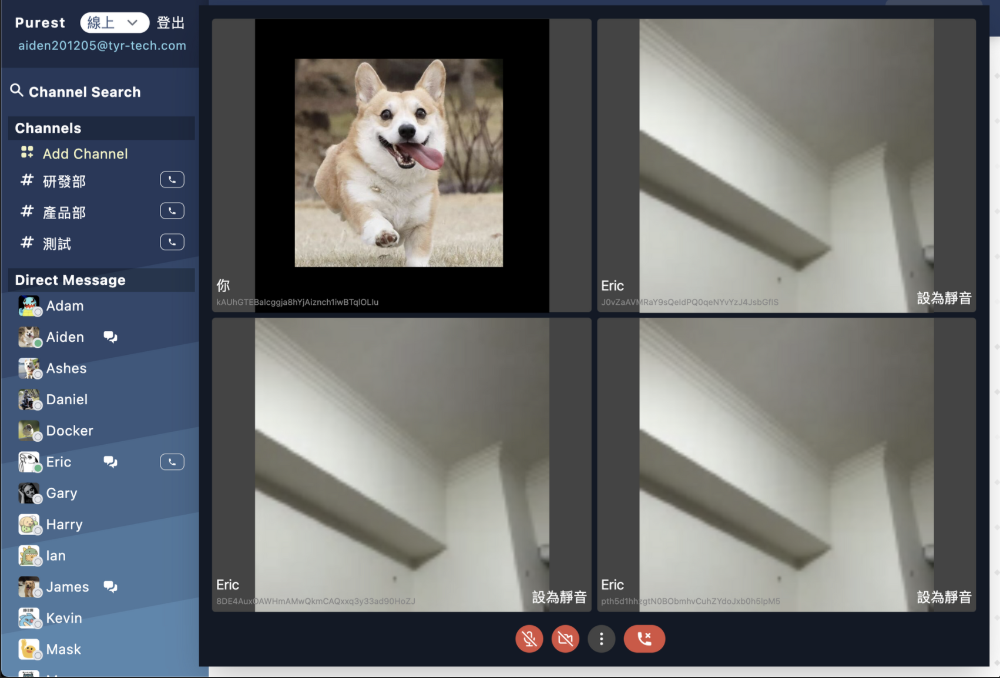

Confinement Official

總計 32 頁面。包含 RWD、瀏覽器兼容性、無障礙、SEO。
熟悉運用 Pug, Sass, BEM 建置各元件，抽離樣式變數及管理。
熟悉運用 Pug, Sass, BEM 建置各元件，抽離樣式變數及管理。
Confinement Commerce Website
總計 32 頁面。包含 RWD、瀏覽器兼容性、無障礙、SEO。
閱讀第三方文件及引入各工具，如 google Map、Slick、ScrollMagic 等等。
閱讀第三方文件及引入各工具，如 google Map、Slick、ScrollMagic 等等。
Pharmacy Commerce Website

總計 32 頁面。包含 RWD、瀏覽器兼容性、無障礙、SEO。
使用 GreenSock 製作 SVG 變形動畫特效。
使用 GreenSock 製作 SVG 變形動畫特效。
Landing Page

使用 GSAP (Greensock) 製作多重時間軸的進場特效。
包含滾動互動、SVG 變形動畫等。
包含滾動互動、SVG 變形動畫等。
Countdown Animation

使用 Vue 建置倒數動畫，透過 transform-style: preserve-3d
模擬翻頁效果。
並能在部署時傳入參數，控制倒數日時、時間。
並能在部署時傳入參數，控制倒數日時、時間。
Firework Animation
運用 Create.js 製作 Canvas 動畫
並模擬重力加速度，製作爆炸粒子動畫
並模擬重力加速度，製作爆炸粒子動畫
Chain Dialog

建立一個彈窗功能，並能具有 promise chain
功能，非同步呼叫後續的函數。
this.$dialog()
.onCancel(() => { // do.. })
.onOK(() => { // do.. })
P2P通話應用程式
